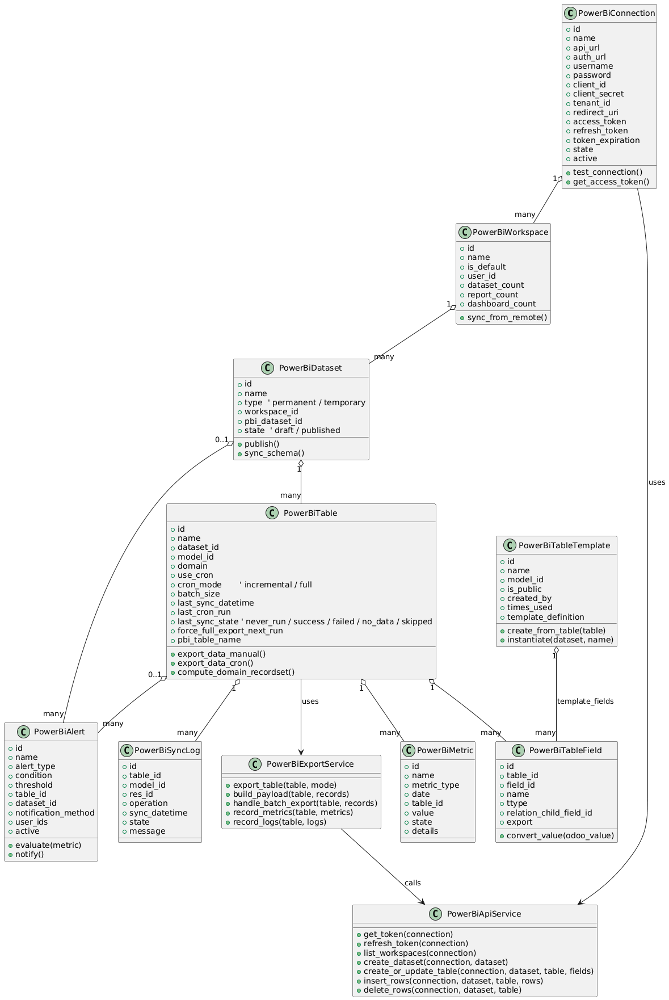
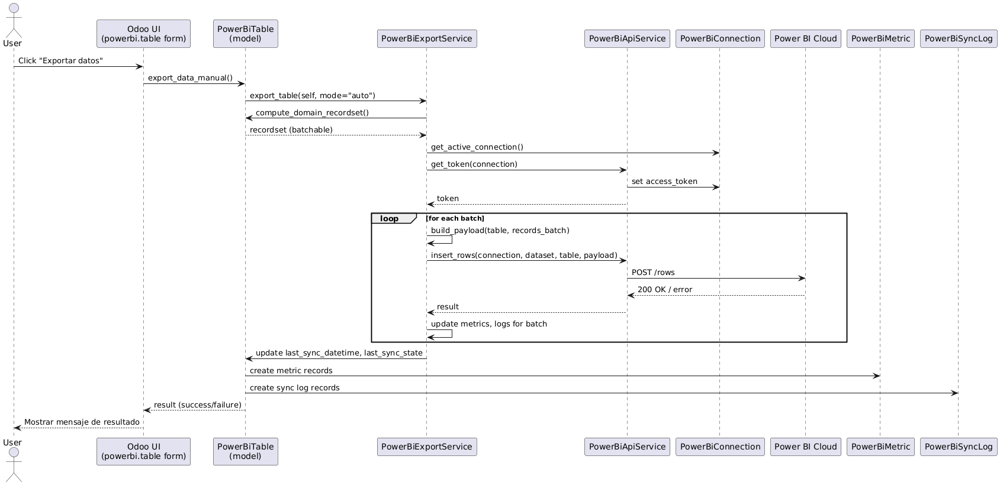
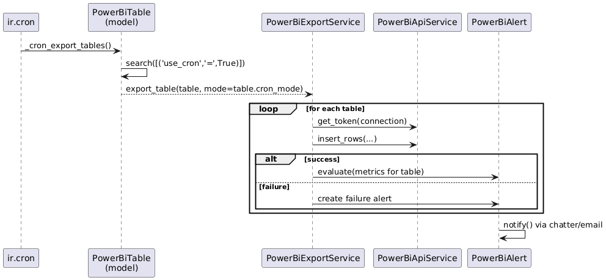

Módulo Power BI Connector para Odoo 19
Versión 1.0 – Elaborado por Grupo Nahuiik
Desarrollar un módulo para Odoo 19 que permita integrar Odoo con Microsoft Power BI, replicando y mejorando las funcionalidades de un conector previo (ej. Odoo 14) y adaptando la implementación a la arquitectura y API de Odoo 19.
create_date y write_date.basewebmail (para chatter y notificaciones)queue_job o equivalente (opcional/recomendado para grandes volúmenes)https://api.powerbi.com/v1.0/myorg).powerbi.connection)Campos principales:
name (Char): Nombre de la conexión.api_url (Char): URL de API Power BI (por defecto https://api.powerbi.com/v1.0/myorg).auth_url (Char): URL de autorización Azure (https://login.microsoftonline.com).username, password (opcional, si se usa modo MasterUser).client_id, client_secret, tenant_id, redirect_uri.access_token, refresh_token, token_expiration.state (draft/connected/failed), active (solo una activa).Comportamiento:
res.config.settings)Definidos como parámetros en ir.config_parameter (ejemplos):
powerbi_default_batch_size (ej. 10,000).powerbi_default_cron_mode (incremental/full).powerbi_use_write_date_default (boolean).powerbi_slow_export_threshold (segundos, ej. 120).powerbi_low_record_threshold (ej. 10).powerbi_preview_limit (ej. 100 filas).powerbi_token_expiration_buffer (ej. 300 segundos).powerbi_alert_window_hours (ej. 24 horas).powerbi_enable_auto_alerts, powerbi_show_advanced_alerts.powerbi.workspace)name, is_default, user_id, contadores de datasets/reports/dashboards.powerbi.dataset)name, type (permanent/temporary), workspace_id.pbi_dataset_id, state (draft/published).table_ids).powerbi.table)name, dataset_id, model_id (ir.model), domain.use_cron, cron_mode (incremental/full), batch_size.last_sync_datetime, last_cron_run, last_sync_state.force_full_export_next_run.field_ids – modelo powerbi.table.field).Lógica principal:
create_date / write_date > last_sync_datetime.last_sync_datetime y exporta todo el dominio.batch_size.last_sync_datetime solo si la exportación completa es exitosa.powerbi.table.field)table_id (tabla), field_id (ir.model.fields).name (nombre en Power BI), ttype (tipo técnico), export (boolean).relation_child_field_id: campo hijo para relacionales.relation_child_field_id (ej. name).powerbi.table.template)powerbi.metric)powerbi.alert)powerbi.sync.log)res_id, operación, fecha, estado, mensaje.last_sync_datetime y configuración.last_sync_datetime y estado de sincronización.ir.cron para ejecutar una función global de sincronización.use_cron = True y llama al proceso de exportación.cron_mode por tabla.res.partner).queue_job). Este SRS define de forma estructurada los requisitos del módulo Power BI Connector para Odoo 19. Servirá como referencia para el equipo de desarrollo, QA y stakeholders durante todo el ciclo de vida del proyecto.
El sistema será un módulo de Odoo que permita la integración con Microsoft Power BI, incluyendo configuración, administración de entidades Power BI (workspaces, datasets, tablas), exportación de datos, monitoreo y mecanismos de seguridad.
El módulo se integra como un componente adicional de Odoo 19, usando modelos, vistas, acciones de servidor, parámetros de sistema y tareas programadas. La interacción con Power BI será vía API REST y Azure AD OAuth2.
create_date y write_date.write_date.last_sync_datetime y solo envía registros nuevos/modificados.
Como Administrador Power BI
Quiero configurar las credenciales de Azure AD y Power BI en Odoo
Para poder conectar la instancia de Odoo con Power BI de forma segura.
Criterios de aceptación:
Como Administrador
Quiero que solo exista una conexión activa a Power BI
Para evitar inconsistencias entre múltiples configuraciones.
Como Analista
Quiero importar los Workspaces de Power BI a Odoo
Para administrarlos desde Odoo y vincular datasets/tablas.
Como Analista
Quiero crear datasets (permanentes o temporales) desde Odoo
Para organizar mis fuentes de datos en Power BI.
pbi_dataset_id.
Como Analista
Quiero definir una tabla asociada a un modelo de Odoo y seleccionar campos
Para exportar datos de ese modelo a Power BI.
ir.model.fields.
Como Analista
Quiero configurar qué valor enviar para campos relacionales
Para tener datos legibles en Power BI.
many2one se puede elegir el campo hijo (ej. name) para exportar.one2many y many2many se usa un formato estandarizado (ej. lista separada por comas o JSON).name por defecto (cuando exista).
Como Analista
Quiero ejecutar una exportación manual de una tabla
Para probar la configuración y desencadenar actualizaciones puntuales.
last_sync_datetime y se genera una métrica.
Como Administrador
Quiero que las exportaciones automáticas sean incrementales
Para reducir el tiempo de ejecución y uso de ancho de banda.
create_date o write_date posteriores a last_sync_datetime.write_date es configurable globalmente.
Como Administrador
Quiero programar exportaciones automáticas
Para mantener los datasets de Power BI actualizados sin intervención manual.
cron_mode.use_cron = True.
Como Analista
Quiero guardar una tabla como plantilla
Para reutilizar la configuración en futuros proyectos.
Como Analista
Quiero crear tablas a partir de plantillas
Para acelerar la configuración de nuevas conexiones de datos.
Como Administrador
Quiero ver métricas de cada exportación
Para evaluar rendimiento, tiempos de ejecución y volumen de datos.
Como Administrador
Quiero recibir alertas cuando haya problemas en exportaciones
Para reaccionar rápidamente ante errores o anomalías.
Como Analista
Quiero ver el historial de exportaciones por registro/tablas
Para auditar qué datos se enviaron y cuándo.
Como Administrador Power BI
Quiero visualizar un panel con el estado actual del conector
Para detectar incidentes sin revisar cada tabla manualmente.
Como Power BI Officer
Quiero revisar las versiones anteriores de un dataset/tabla y restaurar una si es necesario
Para revertir cambios que hayan roto exportaciones o dashboards.

@startuml
' ====== CORE ENTITIES ======
class PowerBiConnection {
+id
+name
+api_url
+auth_url
+username
+password
+client_id
+client_secret
+tenant_id
+redirect_uri
+access_token
+refresh_token
+token_expiration
+state
+active
+test_connection()
+get_access_token()
}
class PowerBiWorkspace {
+id
+name
+is_default
+user_id
+dataset_count
+report_count
+dashboard_count
+sync_from_remote()
}
class PowerBiDataset {
+id
+name
+type ' permanent / temporary
+workspace_id
+pbi_dataset_id
+state ' draft / published
+publish()
+sync_schema()
}
class PowerBiTable {
+id
+name
+dataset_id
+model_id
+domain
+use_cron
+cron_mode ' incremental / full
+batch_size
+last_sync_datetime
+last_cron_run
+last_sync_state ' never_run / success / failed / no_data / skipped
+force_full_export_next_run
+pbi_table_name
+export_data_manual()
+export_data_cron()
+compute_domain_recordset()
}
class PowerBiTableField {
+id
+table_id
+field_id
+name
+ttype
+relation_child_field_id
+export
+convert_value(odoo_value)
}
class PowerBiTableTemplate {
+id
+name
+model_id
+is_public
+created_by
+times_used
+template_definition
+create_from_table(table)
+instantiate(dataset, name)
}
class PowerBiMetric {
+id
+name
+metric_type
+date
+table_id
+value
+state
+details
}
class PowerBiAlert {
+id
+name
+alert_type
+condition
+threshold
+table_id
+dataset_id
+notification_method
+user_ids
+active
+evaluate(metric)
+notify()
}
class PowerBiSyncLog {
+id
+table_id
+model_id
+res_id
+operation
+sync_datetime
+state
+message
}
' ====== SERVICE LAYER ======
class PowerBiApiService {
+get_token(connection)
+refresh_token(connection)
+list_workspaces(connection)
+create_dataset(connection, dataset)
+create_or_update_table(connection, dataset, table, fields)
+insert_rows(connection, dataset, table, rows)
+delete_rows(connection, dataset, table)
}
class PowerBiExportService {
+export_table(table, mode)
+build_payload(table, records)
+handle_batch_export(table, records)
+record_metrics(table, metrics)
+record_logs(table, logs)
}
' ====== RELATIONSHIPS ======
PowerBiConnection "1" o-- "many" PowerBiWorkspace
PowerBiWorkspace "1" o-- "many" PowerBiDataset
PowerBiDataset "1" o-- "many" PowerBiTable
PowerBiTable "1" o-- "many" PowerBiTableField
PowerBiTable "1" o-- "many" PowerBiMetric
PowerBiTable "1" o-- "many" PowerBiSyncLog
PowerBiDataset "0..1" o-- "many" PowerBiAlert
PowerBiTable "0..1" o-- "many" PowerBiAlert
PowerBiTableTemplate "1" o-- "many" PowerBiTableField : template_fields
PowerBiTable --> PowerBiExportService : uses
PowerBiExportService --> PowerBiApiService : calls
PowerBiConnection --> PowerBiApiService : uses
@enduml

@startuml
actor User as U
participant "Odoo UI\n(powerbi.table form)" as UI
participant "PowerBiTable\n(model)" as T
participant "PowerBiExportService" as ES
participant "PowerBiApiService" as API
participant "PowerBiConnection" as C
participant "Power BI Cloud" as PBI
U -> UI: Click "Exportar datos"
UI -> T: export_data_manual()
T -> ES: export_table(self, mode="auto")
ES -> T: compute_domain_recordset()
T --> ES: recordset (batchable)
ES -> C: get_active_connection()
ES -> API: get_token(connection)
API -> C: set access_token
API --> ES: token
loop for each batch
ES -> ES: build_payload(table, records_batch)
ES -> API: insert_rows(connection, dataset, table, payload)
API -> PBI: POST /rows
PBI --> API: 200 OK / error
API --> ES: result
ES -> ES: update metrics, logs for batch
end
ES -> T: update last_sync_datetime, last_sync_state
T -> PowerBiMetric: create metric records
T -> PowerBiSyncLog: create sync log records
T --> UI: result (success/failure)
UI --> U: Mostrar mensaje de resultado
@enduml

@startuml
participant "ir.cron" as CRON
participant "PowerBiTable\n(model)" as T
participant "PowerBiExportService" as ES
participant "PowerBiApiService" as API
participant "PowerBiAlert" as ALERT
CRON -> T: _cron_export_tables()
T -> T: search([('use_cron','=',True)])
T --> ES: export_table(table, mode=table.cron_mode)
loop for each table
ES -> API: get_token(connection)
ES -> API: insert_rows(...)
alt success
ES -> ALERT: evaluate(metrics for table)
else failure
ES -> ALERT: create failure alert
end
end
ALERT -> ALERT: notify() via chatter/email
@enduml
powerbi_connector_19.PowerBiApiService para llamadas REST a Power BI.Capas:
powerbi.connection, powerbi.workspace, powerbi.dataset, powerbi.table, powerbi.table.field, powerbi.table.template, powerbi.metric, powerbi.alert, powerbi.sync.log, res.config.settings.powerbi_api.py: llamadas REST a Power BI, gestión de tokens.powerbi_export.py: lógica de exportación, batching, incremental, métricas y logs.ir.cron para sincronizaciones periódicas.powerbi_connector_19/
__init__.py
__manifest__.py
models/
__init__.py
powerbi_connection.py
powerbi_workspace.py
powerbi_dataset.py
powerbi_table.py
powerbi_table_field.py
powerbi_table_template.py
powerbi_metric.py
powerbi_alert.py
powerbi_sync_log.py
res_config_settings.py
services/
__init__.py
powerbi_api.py
powerbi_export.py
data/
ir_cron.xml
security_groups.xml
ir_model_access.xml
server_actions.xml
views/
menus.xml
powerbi_connection_views.xml
powerbi_workspace_views.xml
powerbi_dataset_views.xml
powerbi_table_views.xml
powerbi_template_views.xml
powerbi_metric_views.xml
powerbi_alert_views.xml
powerbi_sync_log_views.xml
security/
ir.model.access.csv
static/
description/
img/
powerbi.connectionmail.thread para registrar cambios relevantes (estado, conexión, errores).action_test_connection(): obtiene token y realiza llamada de prueba._get_access_token(force_refresh=False): maneja obtención/renovación de tokens.res.config.settings para establecer conexión por defecto.powerbi.tablelast_sync_datetime, last_sync_state, last_cron_run, force_full_export_next_run.action_export_manual(): llamado desde botón; invoca servicio de exportación._export(mode='auto'): lógica principal que decide incremental/full._prepare_domain(): parsea dominio en texto a lista Python._get_records_to_export(mode): obtiene registros a exportar._update_sync_status(success, msg, has_data): actualiza estado y fecha.powerbi_api.pyPowerBiApiService:
get_token(connection) y refresh_token(connection).list_workspaces(connection).create_dataset(connection, dataset).create_or_update_table(connection, dataset, table, fields).insert_rows(connection, dataset, table, rows).delete_rows(connection, dataset, table) (para operaciones full truncate si aplica).dict y lanza excepciones controladas hacia la capa de negocio.powerbi_export.pyPowerBiExportService:
export_table(table, mode): orquesta la exportación._iterate_batches(recordset, batch_size): genera lotes._convert_record_to_row(table, record): mapeo Odoo → formato Power BI._record_metrics(table, duration, count, state)._record_sync_logs(table, records, operation, state, message).relation_child_field_id o name por defecto.group_powerbi_user: lectura y visualización.group_powerbi_officer: configuración media y ejecución de exportaciones.group_powerbi_manager: acceso completo, incl. conexión, parámetros y seguridad.ir.model.access.csv define permisos de lectura/escritura/borrado por modelo y grupo.ir_cron.xml.powerbi.table, método: _cron_export_tables._cron_export_tables:
use_cron = True.export_table() para cada una, respetando su cron_mode.powerbi.table.res.partner).create_date/write_date.powerbi.table y powerbi.metric que arma el payload,
aplicando filtros por compañía/workspace recibidos desde la UI.powerbi.schema.version con campos:
resource_type (dataset/table), resource_id.version_number, summary, diff_json, snapshot_payload.changed_by, changed_on.write() de powerbi.dataset y powerbi.table para generar la versión
cuando cambien campos de esquema (columnas, dominios, estrategia de sync).dataset_id.create_date y write_date.Una historia de usuario se considera lista para desarrollo cuando:
| Historia / Épica | Riesgo técnico | Impacto | Mitigación |
|---|---|---|---|
| Conexión OAuth2 | Expiración de tokens, errores 401/403 | Alto | Refresco automático de token + buffer antes de expiración + logs de detalle |
| Creación de datasets | Esquemas incompatibles (tipos o nombres) | Medio | Validaciones previas de tipos y nombres, rollback en caso de error |
| Exportación incremental | Registros no exportados por errores con write_date |
Alto | Uso combinado de create_date + write_date y ventanas de tiempo solapadas |
| Exportación por lotes | Lotes demasiado grandes, timeout o throttling | Medio | Configurar batch_size y permitir ajuste dinámico según métricas |
| Alertas | Falsos positivos o exceso de notificaciones | Bajo | Umbrales configurables y desactivación granular por tabla/dataset |
| Embedding Power BI | Tokens de embed vencidos, errores de permisos | Alto | Regeneración periódica y manejo de errores con mensajes claros al usuario |
POST https://login.microsoftonline.com/{tenant_id}/oauth2/v2.0/token
Headers:
Content-Type: application/x-www-form-urlencoded
Body (x-www-form-urlencoded):
client_id={CLIENT_ID}
client_secret={CLIENT_SECRET}
scope=https://analysis.windows.net/powerbi/api/.default
grant_type=client_credentialsGET https://api.powerbi.com/v1.0/myorg/groups
Headers:
Authorization: Bearer {access_token}POST https://api.powerbi.com/v1.0/myorg/groups/{groupId}/datasets
Headers:
Authorization: Bearer {access_token}
Content-Type: application/json
Body:
{
"name": "Odoo_PowerBI_Dataset",
"defaultMode": "Push",
"tables": [
{
"name": "Facturas",
"columns": [
{ "name": "id", "dataType": "Int64" },
{ "name": "numero", "dataType": "string" },
{ "name": "state", "dataType": "string" },
{ "name": "amount_total", "dataType": "double" },
{ "name": "partner_name", "dataType": "string" },
{ "name": "invoice_date", "dataType": "DateTime" }
]
}
]
}POST https://api.powerbi.com/v1.0/myorg/groups/{groupId}/datasets/{datasetId}/tables/{tableName}/rows
Headers:
Authorization: Bearer {access_token}
Content-Type: application/json
Body:
{
"rows": [
{
"id": 1,
"numero": "F001",
"state": "draft",
"amount_total": 1000.00,
"partner_name": "Cliente Demo",
"invoice_date": "2025-11-21T10:00:00Z"
},
{
"id": 2,
"numero": "F002",
"state": "posted",
"amount_total": 1500.25,
"partner_name": "Cliente XYZ",
"invoice_date": "2025-11-21T12:30:00Z"
}
]
}DELETE https://api.powerbi.com/v1.0/myorg/groups/{groupId}/datasets/{datasetId}/tables/{tableName}/rows
Headers:
Authorization: Bearer {access_token}POST https://api.powerbi.com/v1.0/myorg/groups/{groupId}/datasets/{datasetId}/refreshes
Headers:
Authorization: Bearer {access_token}export_table(table, mode)def export_table(table, mode):
"""
Exporta los registros de una tabla Odoo hacia Power BI, respetando
la estrategia de sincronización y el modo (incremental o full).
"""
conn = get_active_powerbi_connection()
dataset_id = table.dataset_id.pbi_dataset_id
table_name = table.pbi_table_name
fields = table.field_ids
# 1) Determinar registros a exportar
if mode == 'incremental':
records = fetch_records_incremental(table)
elif mode == 'full':
records = fetch_records_full(table)
else:
# modo auto: decidir según configuración / last_sync
records = fetch_records_auto(table)
if not records:
log_no_data(table)
update_sync_metadata(table, state="no_data")
return
# 2) Procesar por lotes
batch_size = table.batch_size or get_default_batch_size()
record_batches = split_into_batches(records, batch_size)
total_exported = 0
started_at = now()
# Si es estrategia snapshot_full, borramos filas primero
if table.sync_strategy == 'snapshot_full':
api_delete_rows(conn, dataset_id, table_name)
for batch in record_batches:
payload_rows = []
for rec in batch:
row = convert_record_to_pbi_row(rec, fields)
payload_rows.append(row)
payload = {"rows": payload_rows}
# 3) Llamada al API
api_post_rows(conn, dataset_id, table_name, payload)
# 4) Métricas por lote
total_exported += len(batch)
metric_batch_success(table, len(batch))
duration = (now() - started_at).total_seconds()
# 5) Actualizar metadatos de sincronización
update_sync_metadata(
table,
state="success",
last_sync_datetime=now(),
duration=duration,
record_count=total_exported
)_cron_export_tables()def _cron_export_tables():
"""
Tarea programada que exporta todas las tablas marcadas para cron.
Maneja errores por tabla sin detener todo el proceso.
"""
tables = env['powerbi.table'].search([('use_cron', '=', True)])
for table in tables:
try:
mode = table.cron_mode or 'incremental'
export_table(table, mode)
except Exception as e:
# Registrar error y generar alerta
log_export_error(table, e)
create_powerbi_alert(
table=table,
alert_type="export_failed",
message=str(e)
)
# Continuar con la siguiente tabla
continue| Modelo Odoo | Campo Odoo | Tipo Odoo | Campo PBI | Tipo PBI | Regla de transformación |
|---|---|---|---|---|---|
| account.move | id | Integer | id | Int64 | Directo |
| account.move | name | Char | numero | string | Directo |
| account.move | state | Selection | state | string | Directo (mismo valor técnico) |
| account.move | amount_total | Monetary | amount_total | double | Convertir a float; manejar null como 0.0 o null |
| account.move | partner_id | Many2one | partner_name | string | partner_id.name; si no hay partner → “Sin cliente” |
| account.move | invoice_date | Date | invoice_date | DateTime | Transformar a ISO 8601 (fecha en UTC a medianoche) |
| account.move | write_date | Datetime | last_update | DateTime | ISO 8601; usado para incremental |
YYYY-MM-DDTHH:MM:SSZ.true / false.relation_child_field_id (típicamente name).powerbi.table, powerbi.dataset) en Odoo 14/15.| Rol | Descripción | Capacidades principales |
|---|---|---|
| Power BI User | Usuario de negocio que consulta reportes y métricas. | Ver dashboards embebidos, consultar métricas básicas, ver logs (solo lectura) de su compañía. |
| Power BI Officer | Analista responsable de diseñar datasets y tablas. | Crear/editar tablas, datasets, plantillas; ejecutar exportaciones manuales; consultar métricas y logs completos (limitados por compañía). |
| Power BI Manager | Administrador del conector. | Configurar conexión, parámetros globales, cron, alertas; acceso completo a todos los registros, multi-compañía; gestionar permisos y revisar auditoría. |
# powerbi.table
[('company_id', 'in', [user.company_id.id, False])]# powerbi.sync.log
[('table_id.company_id', 'in', [user.company_id.id, False])]# powerbi.metric
['|',
('responsible_id', '=', user.id),
('responsible_id', '=', False)
]| ID Caso | Objetivo | Entrada | Resultado esperado |
|---|---|---|---|
| UT-01 | Validar selección incremental de registros | Tabla con last_sync_datetime y registros con write_date reciente |
Solo se seleccionan registros cuya write_date > last_sync_datetime |
| UT-02 | Conversión de Many2one | Factura con partner_id definido |
Se envía partner_name = partner_id.name en la fila Power BI |
| UT-03 | Borrado de tabla en snapshot | Tabla en modo snapshot_full |
Se ejecuta DELETE rows antes del primer POST rows de la ejecución |
| UT-04 | Manejo de error de API | Respuesta 401/403/500 en post_rows |
Se lanza excepción controlada, se registra log y no se actualiza last_sync_datetime |
| ID Caso | Flujo | Validación |
|---|---|---|
| IT-01 | Conexión Odoo ↔ Power BI | Conexión “Probar” devuelve éxito, se puede listar Workspaces |
| IT-02 | Creación de dataset y tabla | Dataset aparece en Power BI con tabla “Facturas” y columnas correctas |
| IT-03 | Exportación batch | Filas visibles en Power BI; métricas registradas en Odoo |
| IT-04 | Cambio de estado de factura (draft → paid) | En snapshot_full se reconstruye tabla y factura aparece como paid; en log_append se agrega evento con nuevo estado |
draft, 10 en posted, 5 en cancel.| ID | Tarea | Descripción | Dependencias | Responsable sugerido |
|---|---|---|---|---|
| T-01 | Esqueleto del módulo | Crear módulo Odoo, estructuras básicas (manifiesto, init, modelos vacíos) | – | Backend |
| T-02 | Modelo powerbi.connection | Campos, vistas, lógica OAuth2 y pruebas de conexión | T-01 | Backend |
| T-03 | Servicios API Power BI | Módulo python con llamadas autenticadas y manejo de errores | T-02 | Backend |
| T-04 | Monitor de salud OWL | Endpoint JSON + componente OWL con polling, filtros y badges | T-03, T-07 | Frontend/Backend |
| T-05 | Versionado de datasets/tablas | Modelo powerbi.schema.version, triggers write, wizard de comparación/restauración |
T-01, T-06 | Backend |
| T-06 | Modelos core (dataset, table, field, metric, alert, log) | Campos, vistas y acciones base de exportación | T-01 | Backend |
| T-07 | Servicios de exportación | Implementar export_table, cron, métricas y logs |
T-03, T-06 | Backend |
| T-08 | Plan de pruebas automatizadas | Crear tests unitarios (services) e integración (cron, exportaciones) | T-07 | QA/Backend |
| T-09 | Documentación y demo | README, manual funcional, scripts de datos demo | T-02–T-08 | PM/Backend |
| Endpoint | Método | Entrada | Salida | Notas |
|---|---|---|---|---|
| /powerbi/monitor/status | GET | Query params: company_id, workspace_id, dataset_id (opcionales) |
JSON: {connection: {state, message}, cron: {last_run, status}, tables: [...], metrics: {...}} |
Cache corta (30s). Requiere grupo Manager/Officer. |
| /powerbi/schema/version/compare | POST | Body JSON: {resource_type, resource_id, version_a, version_b} | JSON con diff estructurado (fields_added, removed, changed) | Usado por wizard, valida acceso ACL. |
| /powerbi/schema/version/restore | POST | {resource_type, resource_id, target_version} | JSON {status, message} | Bloquea exportaciones hasta publicar nuevamente. |
name, resource_type (selection dataset/table), resource_ref (Reference), version_number, summary, diff_json (Json), snapshot_payload (Binary o Json), changed_by (Many2one res.users), changed_on (Datetime).version_id_a, version_id_b, diff_html.| ID | Tipo | Descripción | Datos necesarios | Resultado esperado |
|---|---|---|---|---|
| UT-MON-01 | Unit | Servicio monitor devuelve payload consistente | Tablas con distintos estados, métricas recientes | JSON con totales correctos y tablas ordenadas por severidad |
| UT-VSN-01 | Unit | Trigger de versionado genera snapshot sólo si cambian campos relevantes | Tabla con cambio en nombre de columna | Se crea registro en powerbi.schema.version con diff JSON |
| IT-MON-01 | Integración | Monitor OWL muestra estado correcto al simular fallo de conexión | Conexión sin token válido | Tarjeta conexión en rojo, alerta creada |
| IT-VSN-02 | Integración | Restaurar versión previa de tabla y publicar de nuevo | Tabla con al menos 2 versiones | Campos se sincronizan con snapshot y exportación vuelve a estado success |
| E2E-01 | End-to-end | Flujo completo con monitor: creación tabla → exportación → monitor refleja métricas | Dataset demo, registros sample | Monitor muestra exportación exitosa y sin alertas |
gn_powerbi_connector_19.__manifest__.py, __init__.pymodels/, services/, controllers/, views/, security/, data/, static/src/js (monitor OWL).tests/test_*.py con TransactionCase.i18n/es.po.odoo-bin --test-enable con modulo específico.pylint --load-plugins=pylint_odoo.